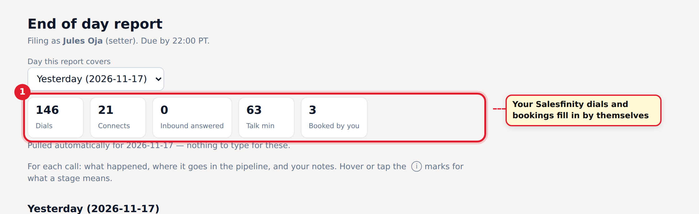
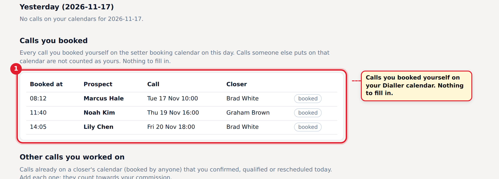
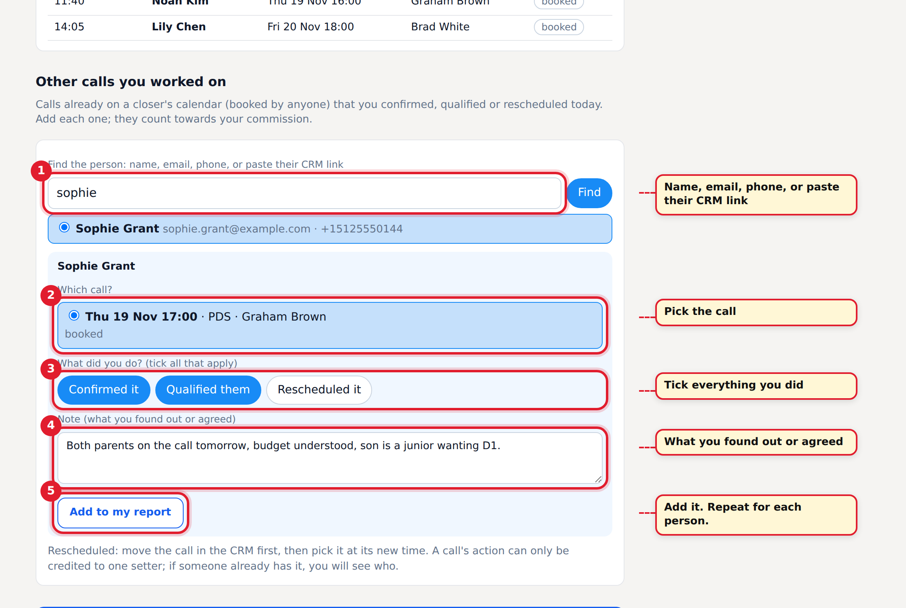
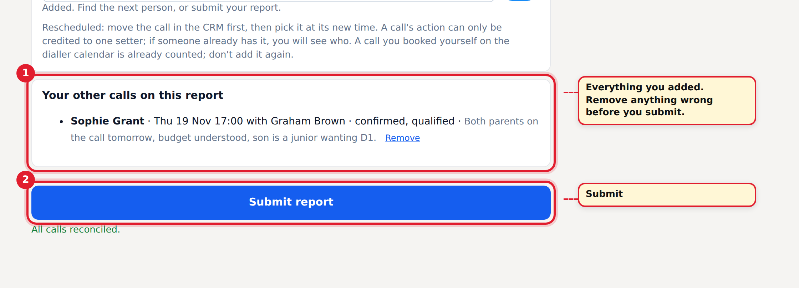

ACTA Academy · Jules
End-of-day report: setters
How to file your end-of-day report: your dials and bookings fill in by themselves; you add the calls you confirmed, qualified or rescheduled.
1Open your report
Go to actadash.engrow.ai, sign in with your actafootball.com email (a one-time code is emailed to you) and bookmark it. Open End of day report. File it every working day by 10pm Pacific. Your Salesfinity dials, connects and talk time fill in by themselves.

2Calls you booked: automatic
Every call you book yourself on the ACTA Player Development Session - Dialler calendar is counted as yours. Nothing to fill in. Always book on that calendar, from your own login, so the call is credited to you.

3Calls you confirmed, qualified or rescheduled
For calls already on a closer's calendar that someone else booked:
- Find the person by name, email or phone, or paste their CRM link.
- Pick the call.
- Tick everything you did: Confirmed it, Qualified them, Rescheduled it.
- Write what you found out or agreed, then Add to my report.
Repeat for each person. Each one is credited to you, so add every one. For a reschedule, move the call in the CRM first, then pick it at its new time.

4Check and submit
Everything you added is listed. Remove anything that is wrong, then submit. You can open the report again and change it later.

Screens show sample prospects. What you add stays in your report for a manager to review; it does not change the CRM. Anything with no sign of your work in Salesfinity or the CRM is flagged for review.